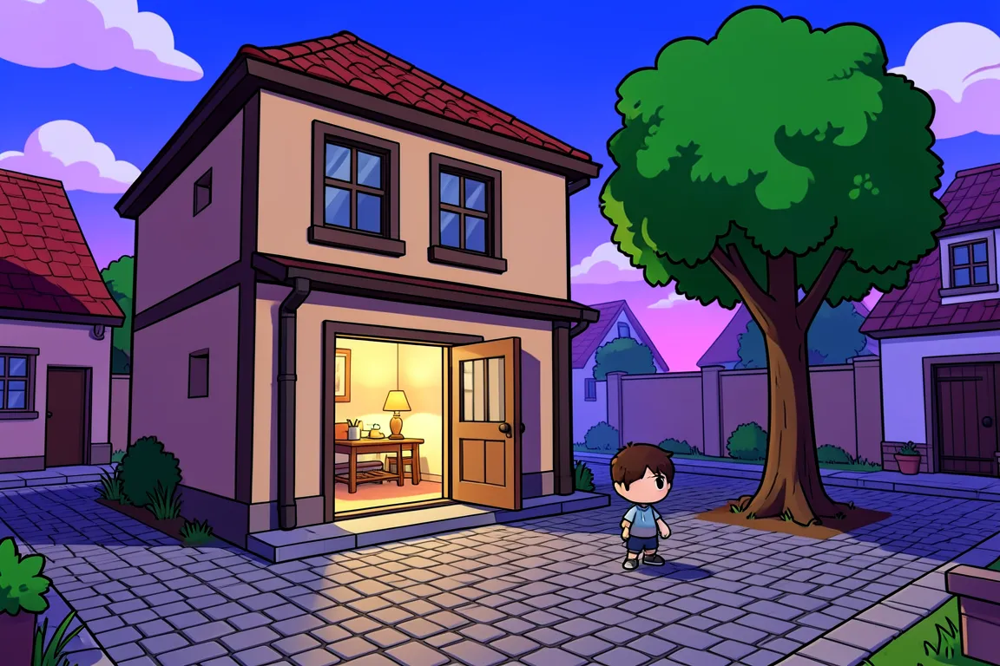

3D-modeller tegnet slik at de ser ut som en tegneserie eller en animasjonscelle: lyset faller i 2 eller 3 flate trinn, svarte konturer følger hver form, og fargene er klare og flate. En hel 3D-verden ser håndtegnet ut.

Kjerneidé
3D i sanntid trenger ikke etterligne et fotografi; den kan etterligne en tegning og beholde klarheten fra alle vinkler.
Designprinsipper
Lys hver flate i 2 eller 3 flate verdisteg med en hard kant mellom dem.
Tegn en kontur på 1–4 px rundt hver silhuett og hver indre fold.
Bruk mettede, flate grunnfarger; legg til tekstur bare som malte penselstrøk.
Hold formene enkle og overdrevne: store hoder, tunge bygninger.
Bruk en klar, lys himmel med stiliserte skyer.
Hold konturvekten lik uansett avstand fra kameraet.